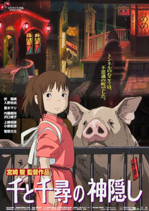

Spirited Away

Spirited Away is a 2001 Japanese animated fantasy film written and directed by Hayao Miyazaki. It was produced by Toshio Suzuki, animated by Studio Ghibli, and distributed by Toho. It follows a young girl named Chihiro "Sen" Ogino, who moves to a new neighborhood and inadvertently enters the world of kami (spirits of Japanese Shinto folklore). After her parents are turned into pigs by the witch Yubaba, Chihiro takes a job working in Yubaba's bathhouse to find a way to free herself and her parents and return to the human world.